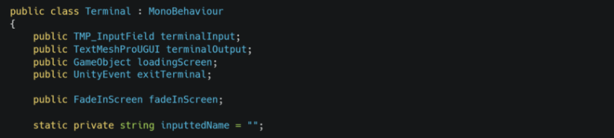
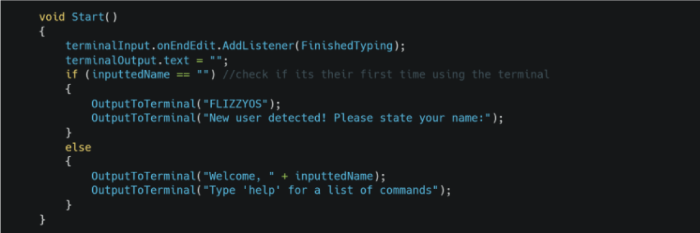
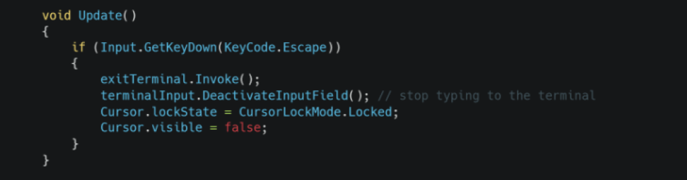
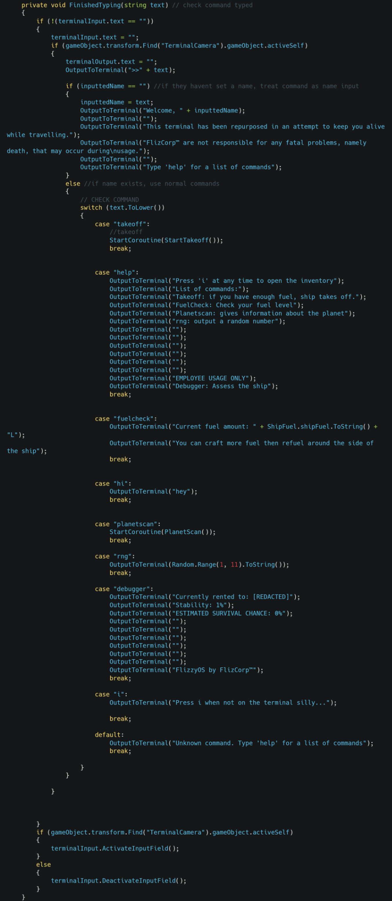
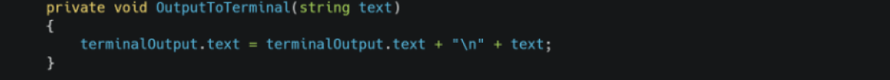
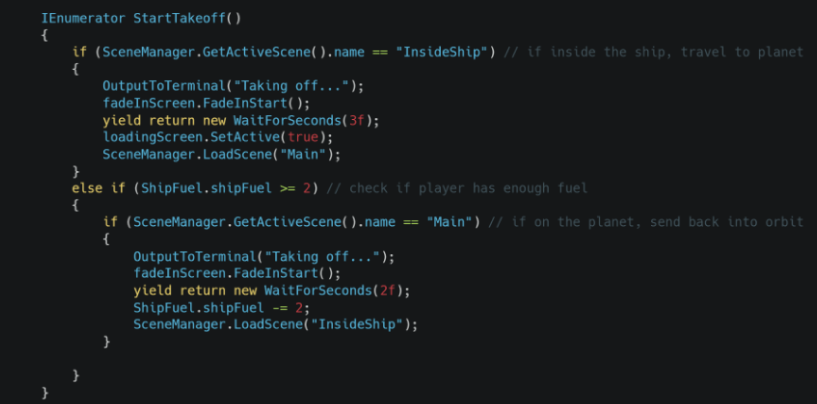
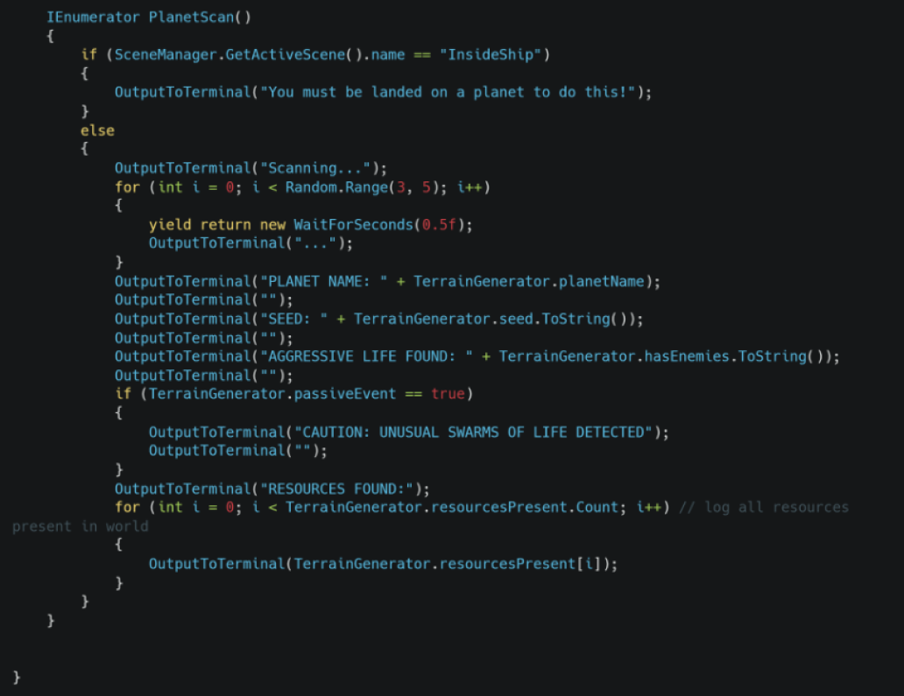

Functional requirement
“There should be a rocket ship you can use to travel to different planets, to ensure smooth transition between planets, when you use the ship, it will transition you to a menu on a computer screen that lets you type commands that let you do things such as picking a new planet to travel to or travel back to a discovered planet
Testable criteria:
Interacting with ships brings player to monitor screen
player can type on the screen then press enter to send command
command to go to planet sends player to planet”


Terminal Variables

Start method adds a listener for when the user finishes typing, and checks if the username has been defined yet.

Checks for escape key to exit terminal

FinishedTyping method is where the command typed is checked. It uses a switch case that checks the inputted text with each part of the switch case being a command.

Method that easily adds text to existing output text

Begins the ship takeoff to either generate a new planet or head back into orbit.

A command to check what is present on your current planet (only runs if the correct scene is loaded)